CN — China
The main impact of a 200 basis-point (2.00 percentage-point) rise in United States interest rates on China is a 0.03% drop in GDP by the eleventh quarter — a minimal spillover. China ranks twenty-fifth of the countries covered by absolute GDP response, placing it in the smallest-impact band. The shock is a US monetary tightening, and China's own policy rate does not move in lockstep with it; the domestic response is a slow, second-order adjustment rather than a sharp contraction. The peak GDP loss of −0.0313% of GDP arrives in Q11, and by Q20 the gap has narrowed to −0.0035%, with the effect mostly faded by Q19. This is a small, delayed, and largely self-correcting hit.
Demand and trade tell a coherent story of weak domestic absorption offset by an improving external balance. Household consumption (Consumption) falls gradually, peaking at −0.0175% below baseline in Q11 and still −0.001% down in Q20. Private investment (Investment) is hit harder and earlier, peaking at −0.0824% in Q9, before swinging positive from Q17 and ending Q20 at +0.019% — the cost-of-capital channel bites first and then reverses as the policy rate falls. Government spending (Gov Spending) actually rises slightly, peaking at +0.0053% in Q11, a modest automatic-stabiliser offset. Government debt (Gov Debt) drifts lower, reaching −0.0188% below baseline by Q18, reflecting the weaker nominal tax base. Net exports (Net Exports) improve throughout, peaking at +0.0358% in Q8 and remaining positive at +0.009% in Q20 — the trade balance strengthens as domestic demand softens and the currency moves.
The external and FX picture is the clearest transmission channel. The real exchange rate (Currency Strength) appreciates sharply, peaking at +0.2853% in Q8 and still +0.0107% in Q20. A stronger real exchange rate normally hurts net exports, but here the trade balance improves anyway: the domestic demand contraction is large enough to outweigh the competitiveness loss, so imports fall faster than exports. The currency strength and the net-export gain are therefore not contradictory — they reflect a demand-driven, not a price-driven, adjustment.
Labour market effects are small but persistent. Employment falls steadily, peaking at −0.0128% below baseline in Q15 and still −0.0085% down in Q20. Unemployment rises in parallel, peaking at +0.0062 percentage points in Q13 and remaining +0.0025pp above baseline at Q20. Real wages are the most striking labour series: they initially rise, peaking at +0.0179% in Q9, before turning negative in Q15 and ending Q20 at −0.0334% — the largest single decline in the labour block. The initial wage gain reflects sticky nominal wages against falling inflation; the later loss reflects the delayed pass-through of weaker demand.
Prices move in two phases. CPI inflation (CPI Inflation) rises initially, peaking at +0.0145 percentage points in Q2, then crosses zero in Q9 and ends Q20 at −0.0009pp. Domestic inflation (Domestic Infl.) follows the same pattern, peaking at +0.0102pp in Q2 and turning negative in Q9, ending at −0.0006pp. Firms' marginal cost (Marginal Cost) falls throughout, peaking at −0.0185% below baseline in Q11 and still −0.002% down in Q20. The initial inflation bump is a relative-price effect from the exchange rate; the later disinflation is the genuine demand-driven price response.
Financial conditions tighten and then ease. The local policy rate (Policy Rate) initially rises slightly, peaking at +0.0095pp in Q4, before turning negative in Q10 and ending Q20 at −0.0171pp — the central bank eventually eases into the slowdown. Government bond prices (Bond Price) fall sharply, peaking at −0.277% below baseline in Q8, then recover and turn positive from Q13, ending Q20 at +0.0856%. The 2-year government yield (Govt 2Y Yield) rises initially, peaks at +0.0069pp in Q1, crosses zero in Q5, and ends Q20 at −0.0096pp. The 5-year yield (Govt 5Y Yield) falls throughout, peaking at −0.0124pp in Q9 and ending at −0.0022pp. The 10-year yield (Govt 10Y Yield) falls modestly, peaking at −0.0046pp in Q9 and returning to roughly zero by Q20. Equity prices (Equity Index) fall sharply, peaking at −0.2249% below baseline in Q8 and still −0.0132% down in Q20. Tobin's Q (Tobin's Q) falls in parallel, peaking at −0.0577% in Q9 before turning positive from Q17 and ending Q20 at +0.0133%. House prices (House Prices) decline steadily, peaking at −0.0275% below baseline in Q15 and still −0.0228% down in Q20 — the slowest-moving financial series. Bank credit (Bank Credit) contracts gradually, peaking at −0.0055% below baseline in Q16 and still −0.005% down in Q20. Lending spreads (Credit Spread) barely move, peaking at just +0.00004pp in Q16 — effectively flat, confirming that this is not a credit-event shock.
Sectorally, the pain is concentrated in manufacturing. Manufacturing GDP (Manuf. GDP) falls sharply and early, peaking at −0.0864% below baseline in Q8, then recovering steadily and turning positive in Q19, ending Q20 at +0.0015%. Services GDP (Services GDP) falls much more gently, peaking at −0.0183% in Q11 and still −0.002% down in Q20. The capital stock (Capital Stock) erodes slowly, peaking at −0.0035% below baseline in Q16 and still −0.0033% down in Q20 — the long-lived consequence of weaker investment.
On timing, the GDP hit is largest in Q11 at −0.0313% below baseline. It has not fully faded by Q20, but it is mostly gone by Q19, and the path is monotonically shrinking from Q11 onward. The manufacturing peak comes earlier, in Q8, while the labour-market and house-price peaks come later, in Q13 and Q15 respectively — the real economy adjusts faster than the labour and asset markets.
These are model impulse responses versus baseline, not forecasts. They describe how China's economy deviates from a no-shock path after a 200bp US rate rise, holding the model structure fixed. The headline numbers — a 0.03% GDP loss, a 0.22% equity decline, a 0.28% currency appreciation — are small in absolute terms, consistent with China's minimal-band ranking. The story is one of a modest, delayed, demand-driven spillover that the domestic policy response partly offsets, with the external balance improving even as domestic activity softens.
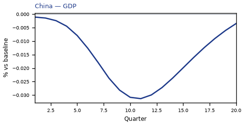
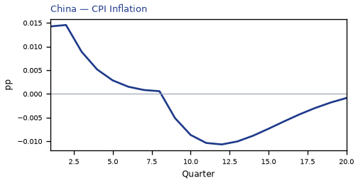
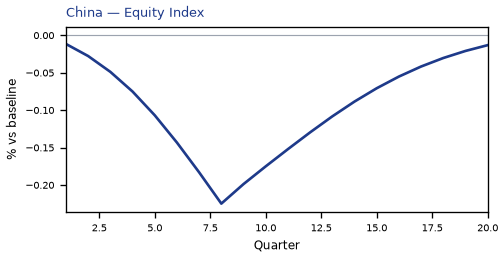
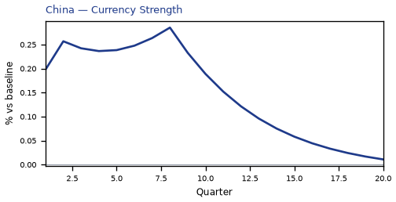
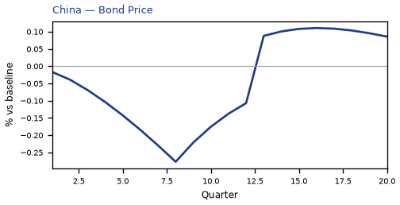
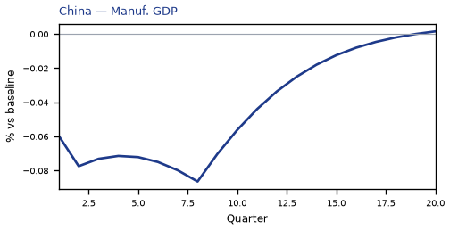
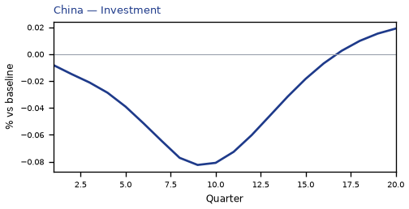
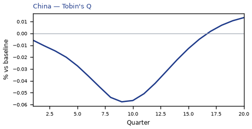
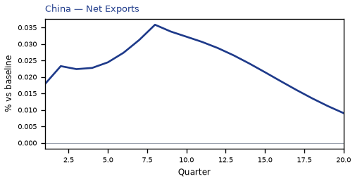
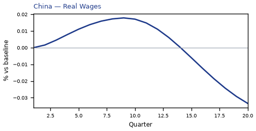
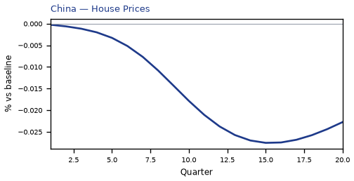

source=live · global_macro_v5 · contract v6 · Q1–Q20 JSON · not financial advice